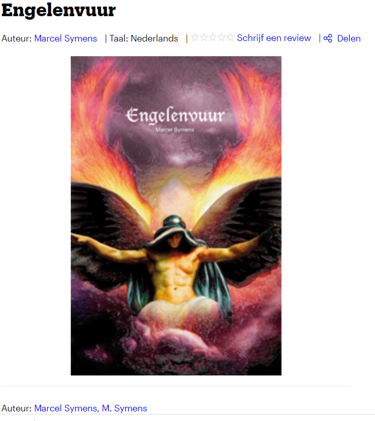
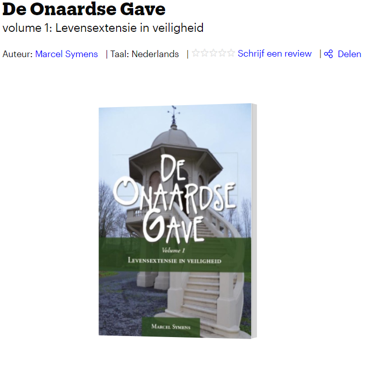

About Me
Hi! I'm Angelclaws, since the year 2005, back when i was 21 years old, I started writing on spirituality with the intention to invent a psychic way to make me and other people live forever.
Since 2005, I have written 7 books and now in June 2021, I started my 8th book. I believe that if I stay inventing and researching things philosophically and psychologically, I may have a chance to get there before I die. I've been 5 years on a vegan diet, and before that, I was 9 years on a vegetarian diet.
In my free time I like to take a walk in the park nearby, and think about the next steps I will take in my 8th book. My writing occupation is a constant one, but I try to stay active in other ways such as coding.
Projects
My 4th book

My first and only roman so far.
My 6th book

My first book on spirituality ever published, but for now, the publisher does not exist any longer.